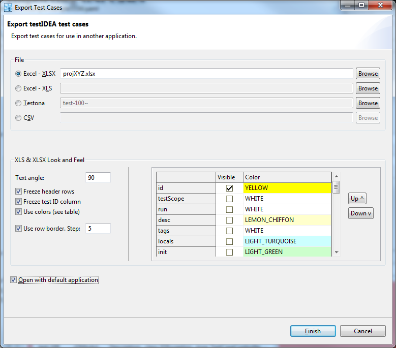
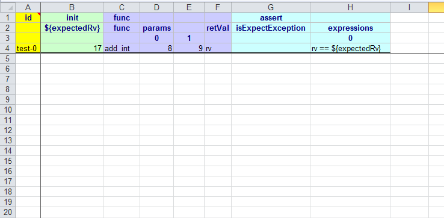
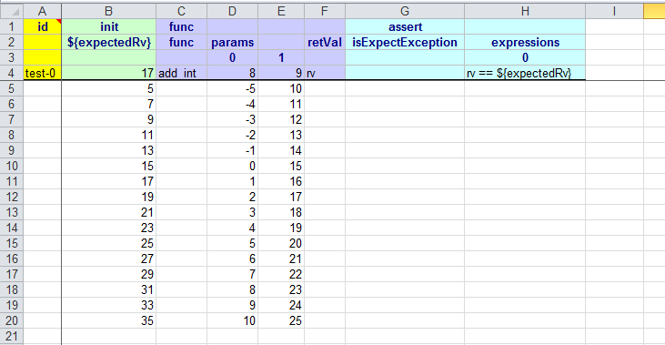
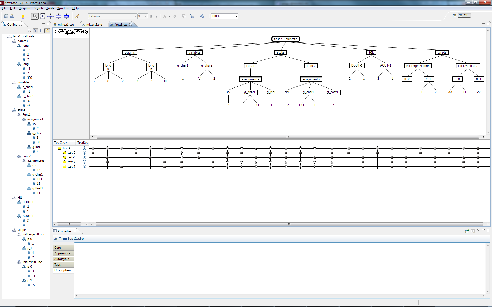
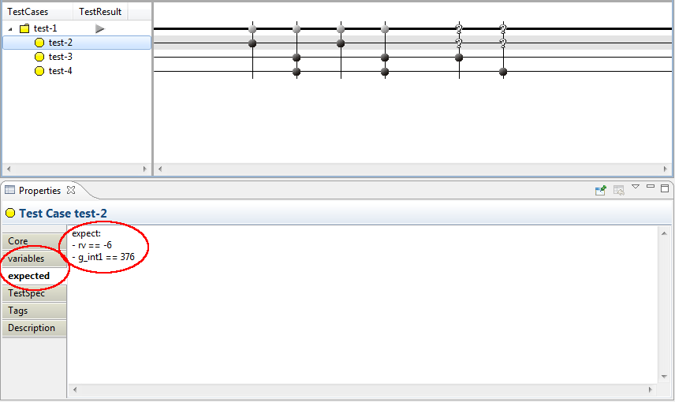
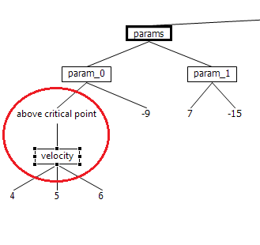
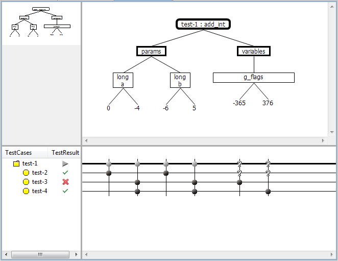

Exporting and Importing test cases
(Professional version only)
To enhance testIDEA with functionality offered by other
applications, we have several possibilities for exporting and
importing test cases. The usual procedure involves
creation of the base test case in testIDEA, exporting it,
creating variants in external tool, and then importing of the
generated tests. Then we run tests with testIDEA.
Available export formats can be seen in the export dialog:

They are described in the following sections:
Spreadsheets and CSV
When we want to create a set of test cases for the same
function, but with different values of parameters, editing is
easier with tools like Excel or Open Office Calc. For this purpose
we can use testIDEA's export and import functionality. The
general procedure is the following:
- Create base test case in testIDEA. It should
specify the function to be tested and any other items, which
define the test. For example, the most common such items are
function parameters and expected return values. testIDEA
exports the following items, if defined:
- Function parameters
- Expected values. The expected expression is split to
two parts where the split point is the last operator. The
first part is written in the second row, while the second
part is added to the first one on import. For example, the
expression
'rv == 3' is split to 'rv
==' and '3'. If we enter values '4',
'5', and '6' in the column
below 'rv ==' in the exported spread sheet,
derived tests will have expected expressions 'rv ==
4', 'rv == '5', and 'rv ==
6'.
- Initialized variables
- Assignments for stubs
- Statistics requirements for coverage
- Profiler timing and hits requirements
- HIL parameters
- winIDEA options
Please note again, that the above items are exported only if
they are defined in the base test case. For example,
if the base test case does not specify HIL
parameters, HIL section will not be exported.
Comments are also exported to Excel, but it is not recommended to
edit them in Excel, because certain format must be
used. Otherwise comments can't be imported back to testIDEA.
Sections, which are not exported, for example declarations of
variables, are lost on import. The same is true for comments
in these sections.
The base test case must have test ID defined,
otherwise testIDEA reports an error.
- Select the test case(s) in testIDEA, then execute
command
File | Export. All selected test
cases get exported to the selected file. In XLS file
each test case gets its own sheet, while in CSV file
they are separated by lines with test IDs. An example of
exported test case is shown below:

- Edit the exported file in some third party tool, like Excel,
Calc, ...). The following rules must be taken into account while
editing:
- Do not edit the first row of each test
case. It defines test sections, and the naming and
order are important here.
-
Edit the second row with identifier names only when
renaming them, or modifying expected expression. It is
preferred to rename items in testIDEA, and then
export the test case again.
-
The third row contains values of the base test
case. It is there for information only - it
is not parsed on import, so any changes done
here are ignored.
-
The fourth and next rows should contain values to be
used for derived test cases. If we enter
formulas, the calculated values will be used.
Empty rows in CSV files are ignored, rows which start with '#'
character are treated as comments and are also ignored.
An example of edited test case is shown below:

-
Save the file and import it in testIDEA. If we want to
import derived test cases only for some base test
cases, we can select those base test cases
and then check the 'Import data only to selected test
cases' check box in the import dialog.
All existing derived test cases of the selected test
cases are deleted on import!
After import we can execute the tests. If we want to modify the
values of derived tests parameters, we don not have to export the
test case again, but simply change values in the exported
file and import them again.
Testona
Testona (former CTE XL Professional) provides graphical view of
test cases with variations of test inputs, and enables rule based
creation of tests cases, while testIDEA provides
execution of test cases with analyzer measurements and HIL.
To use the benefits of both applications, we can use testIDEA's
export/import functionality and share the data in both ways.
Usual workflow includes the following steps:
- Create base test case in testIDEA. Define all sections,
which are needed for testing.
- (optional) Create few derived test cases, which contain
typical values of test inputs (Testona classes)
- Select the base test case in testIDEA and export it to
Testona format with command
File | Export.
- Open the file in Testona and generate additional test cases. Save
the data.
- Import the file to testIDEA and run tests.
- (optional) Export tests with results and view results in
Testona.
Note: When importing Testona file to testIDEA, information about
rules is lost.
Testona Classification Tree as created by testIDEA
Information from testIDEA test cases is divided into two
parts, when exported to Testona. All the data, which define the
execution of tests cases (test inputs), is shown in the Testona
Classification Tree. Compositions and classifications in this tree
are created according to data in the selected test case,
while classes are created according to values found in the derived
test cases.

The Classification Tree generated by testIDEA includes:
- function parameters
- test local and target global variables
- stub assignments and script function parameters
- HIL outputs
- script extension functions parameters
If any of these sections is empty in testIDEA, it is not exported.
Other parts of test case, for example expected results,
coverage and profiler sections are exported as properties of test
cases in Testona. Each testIDEA section creates one tab, which contains
test case data in YAML format. You are free to modify these
data, as long as the
syntax is valid.

Test cases and test groups
Testona supports several forms of test cases and their
grouping, while testIDEA contains only one. This section describes
mapping of these data between testIDEA and Testona:
| Testona Type | testIDEA Type |
|---|
| Test Group | Base test case. Because Test
Group in Testona can not be executed, it is recommended to
configure base test cases as abstract ones. These test
cases do not have marks associated so them, so in Testona we can
modify them only via properties. |
| Test Case | Derived test case. |
| Test Sequence | Not supported by export/import. |
| Test Step | Not supported by export/import. |
Editing the exported Classification Tree in Testona
When editing the composition tree in Testona, which we plan to import
into testIDEA, we have to be aware that the structure and names of
compositions are fixed. They may be missing, but when present they
must be one of:
- the root element has a name composed of test ID and function name
- params - parameters of function under test
- variables - contains the Variables section of testIDEA
- stubs - contains stubs. Its children are compositions with
names of stubbed functions, which may have two
compositions. The assignments composition contains testIDEA
stub assignments expressions, while the scriptParams
composition contains stub script extension function parameters.
- HIL - contains HIL output parameters
- scripts - this composition may have up to four children
compositions, with names of script extension functions.
Classifications and classes may be modified at will.
If test case does not have some section specified, it is merged from
parent test group on import. For example, if we create a new test
case in Testona, it does not have variables section defined. On import,
testIDEA first copies the variables section from the base test group
and then executes assignments specified with marks in Testona.
Function parameters
Each function parameter is shown as one Testona class in the
Classification Tree. Since parameters must be passed to function in
proper order, each class has a tag paramIdx, which
determines position of parameter in parameters list. If position
of parameter changes, we have to modify this value. Names of
parameters are not used on import and can be freely modified.
Variable and HIL classes
For these classes names of Testona classes are used on import.
Custom classifications and comments
Custom classifications, classes and
compositions may be added between classifications with
parameter or variable info, and Testona class containing value, as shown
on the image below.

Since custom nodes have no data representation in testIDEA, they are
ignored and therefore can not be restored on export.
Content of tag Description is preserved on import from
testIDEA, but it is currently not exported.
Test results
When tests are executed in testIDEA, test results are also exported
to Testona format file. To view them in Testona, right click in the
Test Case Tree view, and select option Show Columns | Test Result.
